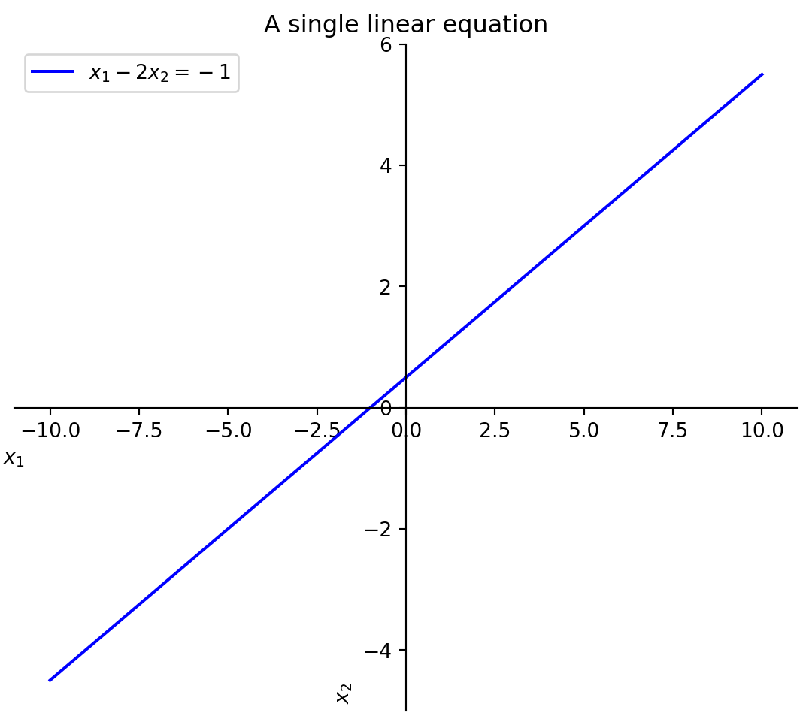
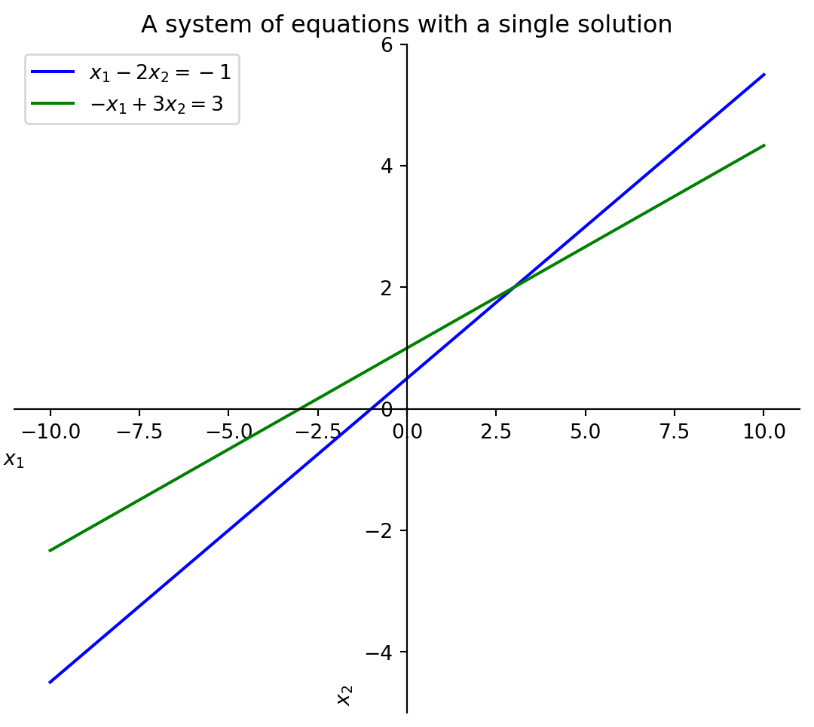

1.1 Systems of Linear Equations with a Single Solution
Below is a linear equation:
Code
import sympy as spimport matplotlib.pyplot as pltimport numpy as np# Declare variablesx1, x2 = sp.symbols('x_1 x_2')# Define the equationequation_1 = sp.Eq(x1 -2*x2, -1)graph_eq1 = sp.solve(equation_1, x2)[0]# Generate data for plottingx1_vals = np.linspace(-10, 10, 400)graph_eq1_lambdified = sp.lambdify(x1, graph_eq1)y1_vals = graph_eq1_lambdified(x1_vals)# Plottingfig, ax = plt.subplots(figsize=(7, 6))# Title and labelsax.set_title('A single linear equation')ax.set_xlabel('$x_1$ ')ax.set_ylabel('$x_2$ ')# Plot the equationax.plot(x1_vals, y1_vals, label='$x_1 - 2x_2 = -1$', color='blue')# Move the left and bottom spines to x = 0 and y = 0, respectivelyax.spines['left'].set_position('zero')ax.spines['bottom'].set_position('zero')ax.spines['right'].set_color('none')ax.spines['top'].set_color('none')# Add legend and gridax.legend()plt.show()

Definition of a linear equation
A linear equation in the variables \(x_1, x_2, \ldots, x_n\) is an equation that can be written in the form
\[a_1x_1 + a_2x_2 + \cdots + a_nx_n = b\]
where \(b\) and the coefficients \(a_1, a_2, \ldots, a_n\) are real or complex numbers. The subscript \(n\) may be any positive integer.
Take the following system of linear equations: \[
\begin{align*}
x_1 - 2x_2 &= -1\\
-x_1 + 3x_2 &= 3
\end{align*}
\]
If we plot these equations on a graph, we can see that they intersect at a single point. This point is the solution to the system of equations.
Code
import sympy as spimport matplotlib.pyplot as pltimport numpy as npx1, x2 = sp.symbols('x_1 x_2')equation_1 = sp.Eq(x1 -2*x2, -1)graph_eq1 = sp.solve(equation_1, x2)[0]equation_2 = sp.Eq(-x1 +3*x2, 3)graph_eq2 = sp.solve(equation_2, x2)[0]# Generate data for plottingx1_vals = np.linspace(-10, 10, 400)graph_eq1_lambdified = sp.lambdify(x1, graph_eq1)graph_eq2_lambdified = sp.lambdify(x1, graph_eq2)y1_vals = graph_eq1_lambdified(x1_vals)y2_vals = graph_eq2_lambdified(x1_vals)# Plottingfig, ax = plt.subplots(figsize=(7, 6))ax.set_title('A system of equations with a single solution')ax.set_xlabel('$x_1$ ')ax.set_ylabel('$x_2$ ')# Plot the equationsax.plot(x1_vals, y1_vals, label='$x_1 - 2x_2 = -1$', color='blue')ax.plot(x1_vals, y2_vals, label='$-x_1 + 3x_2 = 3$', color='green')# Move the left and bottom spines to x = 0 and y = 0, respectivelyax.spines['left'].set_position('zero')ax.spines['bottom'].set_position('zero')ax.spines['right'].set_color('none')ax.spines['top'].set_color('none')# Add legend and gridax.legend()plt.show()

Definition of a system of linear equations
A system of linear equations (or a linear system) is a collection of one or more linear equations involving the same variables- say \(x_1, x_2, \ldots, x_n\). An example is
The above system has two equations and two variables where \(x_1, x_2\) are the variables.
The equations above have only one solution since they intersect at a single point.
Code
from IPython.display import Markdownsolution = sp.solve((equation_1, equation_2), (x1, x2))Markdown(f'$$\n{sp.latex(solution)}\n$$')
\[
\left\{ x_{1} : 3, \ x_{2} : 2\right\}
\]
Code
import sympy as spimport matplotlib.pyplot as pltimport numpy as npx1, x2 = sp.symbols('x_1 x_2')equation_1 = sp.Eq(x1 -2*x2, -1)graph_eq1 = sp.solve(equation_1, x2)[0]equation_2 = sp.Eq(-x1 +3*x2, 3)graph_eq2 = sp.solve(equation_2, x2)[0]# Generate data for plottingx1_vals = np.linspace(-10, 10, 400)graph_eq1_lambdified = sp.lambdify(x1, graph_eq1)graph_eq2_lambdified = sp.lambdify(x1, graph_eq2)y1_vals = graph_eq1_lambdified(x1_vals)y2_vals = graph_eq2_lambdified(x1_vals)# Plottingfig, ax = plt.subplots(figsize=(7, 6))ax.set_title('A system of equations with a single solution')ax.set_xlabel('$x_1$ ')ax.set_ylabel('$x_2$ ')# Plot the equationsax.plot(x1_vals, y1_vals, label='$x_1 - 2x_2 = -1$', color='blue')ax.plot(x1_vals, y2_vals, label='$-x_1 + 3x_2 = 3$', color='green')# Move the left and bottom spines to x = 0 and y = 0, respectivelyax.spines['left'].set_position('zero')ax.spines['bottom'].set_position('zero')ax.spines['right'].set_color('none')ax.spines['top'].set_color('none')# Plot the solutionsolution = sp.solve((equation_1, equation_2), (x1, x2))solution_x1 = solution[x1]solution_x2 = solution[x2]ax.scatter([solution_x1], [solution_x2], color='red', zorder=3) ax.text(solution_x1+.5, solution_x2-.5, ' Solution', fontsize=12)# Add legend and gridax.legend()plt.show()
Definition of a solution
A solution of a linear system is a list of numbers (\(s_1, s_2, \ldots, s_n\)) that makes each equation a true statement when the values \(s_1, s_2, \ldots, s_n\) are substituted for \(x_1, x_2, \ldots, x_n\), respectively.
For example, the list of numbers, \((3,2)\), is a solution of the system above because, when the values \(3,2\) are substituted for \(x_1, x_2\), respectively, both equations are a true statement.
The above list, \((3,2)\), is the solution to the system of equations because it is the only list of numbers that makes both equations true. When we substitute \(3\) and \(2\) for \(x_1\) and \(x_2\) in the first equation, both equations turn out to be true!
If we plot these equations on a graph, we can see that they are parallel and never intersect. This means that there is no solution to this system of equations.
Code
import sympy as spimport matplotlib.pyplot as pltimport numpy as npx1, x2 = sp.symbols('x_1 x_2')# Define the equationsequation_1 = sp.Eq(x1 -2*x2, -1)graph_eq1 = sp.solve(equation_1, x2)[0]equation_2 = sp.Eq(-x1 +2*x2, 3)graph_eq2 = sp.solve(equation_2, x2)[0]# Generate data for plottingx1_vals = np.linspace(-10, 10, 400)graph_eq1_lambdified = sp.lambdify(x1, graph_eq1)graph_eq2_lambdified = sp.lambdify(x1, graph_eq2)y1_vals = graph_eq1_lambdified(x1_vals)y2_vals = graph_eq2_lambdified(x1_vals)# Plottingfig, ax = plt.subplots(figsize=(7, 6))ax.set_title('A system of equations with no solution')ax.set_xlabel('$x_1$ ')ax.set_ylabel('$x_2$ ')# Plot the equationsax.plot(x1_vals, y1_vals, label='$x_1 - 2x_2 = -1$', color='blue')ax.plot(x1_vals, y2_vals, label='$-x_1 + 2x_2 = 3$', color='green')# Move the left and bottom spines to x = 0 and y = 0, respectivelyax.spines['left'].set_position('zero')ax.spines['bottom'].set_position('zero')ax.spines['right'].set_color('none')ax.spines['top'].set_color('none')# Add legend and gridax.legend()plt.show()
If we plot these equations on a graph, we can see that they are the same line. This means that there are an infinite number of solutions to this system of equations.
Code
import sympy as spimport matplotlib.pyplot as pltimport numpy as npx1, x2 = sp.symbols('x_1 x_2')# Define the equationsequation_1 = sp.Eq(x1 -2*x2, -1)graph_eq1 = sp.solve(equation_1, x2)[0]equation_2 = sp.Eq(-x1 +2*x2, 1)graph_eq2 = sp.solve(equation_2, x2)[0]# Generate data for plottingx1_vals = np.linspace(-10, 10, 400)graph_eq1_lambdified = sp.lambdify(x1, graph_eq1)graph_eq2_lambdified = sp.lambdify(x1, graph_eq2)y1_vals = graph_eq1_lambdified(x1_vals)y2_vals = graph_eq2_lambdified(x1_vals)# Plottingfig, ax = plt.subplots(figsize=(7, 6))ax.set_title('A system of equations with infinite solutions')ax.set_xlabel('$x_1$ ')ax.set_ylabel('$x_2$ ')# Plot the equationsax.plot(x1_vals, y1_vals, label='$x_1 - 2x_2 = -1$', color='blue')ax.plot(x1_vals, y2_vals, label='$-x_1 + 2x_2 = 1$', color='green', linestyle='dashed')# Move the left and bottom spines to x = 0 and y = 0, respectivelyax.spines['left'].set_position('zero')ax.spines['bottom'].set_position('zero')ax.spines['right'].set_color('none')ax.spines['top'].set_color('none')# Add legend and gridax.legend()plt.show()